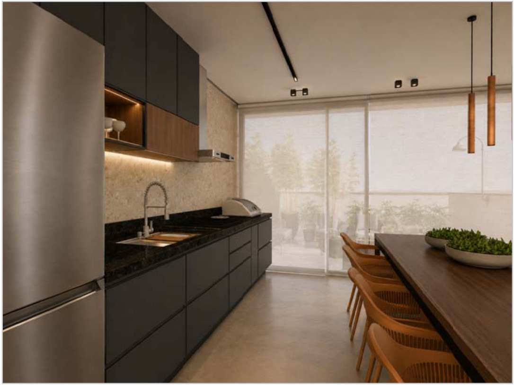
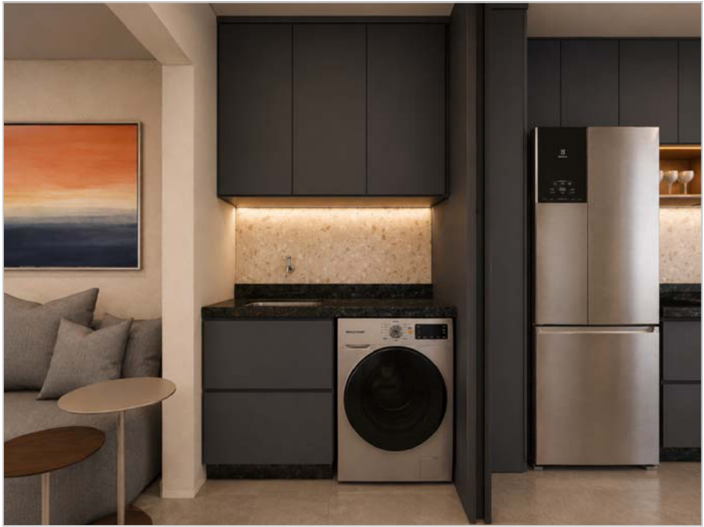
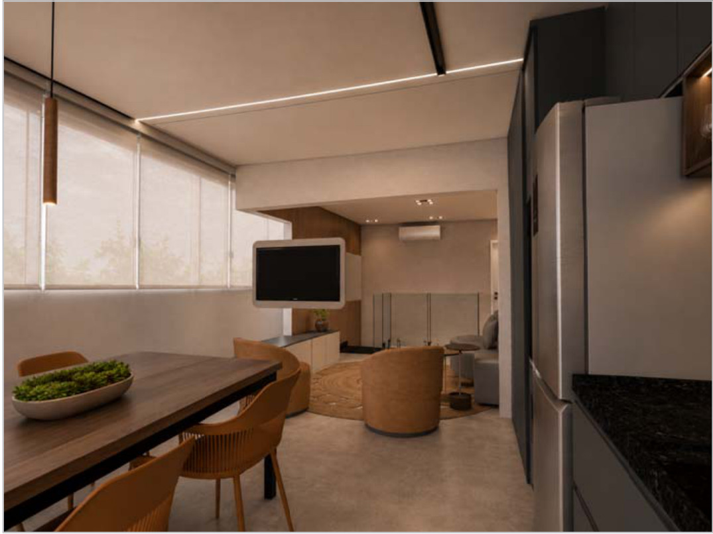

Ambiente 01
Quarto casal
Leitura fiel do seu caderno de marcenaria — planta, elevações
e cortes. Cada peça saiu da prancha cotada, não de estimativa por área.
01
Cabeceira estofada em tecido Bouclé
Cabeceira em tecido Bouclé sobre estrutura de MDF, ocupando a parede inteira, com cantos superiores arredondados e acabamento em meia esquadria. Instalada acima do rodapé, sem apoio no piso.
02
Penteadeira completa
Bancada suspensa em MDF Carvalho Arauco, com quina arredondada e tampo em vidro incolor temperado. Gavetas rasas de organização e gaveteiro auxiliar ao lado. Espelho prata colado com canto em arco e iluminação em LED contornando a borda, acendendo por trás. Puxador em chanfro usinado; interno em MDF Branco TX.
03
Divisórias internas em acrílico
Divisores em acrílico sob medida, um por gaveta, com a malha de compartimentos do detalhe da prancha. Feitos para maquiagem e joias, removíveis para limpeza.
Ambiente 02
Espaço gourmet
Uma corrida única, da lavanderia ao forno: planta, elevação
externa, elevação interna e os três cortes do caderno. Lavanderia fechada por
portas do piso ao teto, vassoureiro inteiro e a bancada completa.

Espaço gourmet · render do caderno de marcenaria.
04
Conjunto completo do espaço gourmet
A corrida inteira em MDF Grafito Chess, com as básculas em MDF Jequitibá: portas da lavanderia do piso ao teto em dobradiça camarão · armário superior e inferior da lavanderia · vassoureiro do piso ao teto, com vassoureiro deslizante, ganchos e prateleiras · armário superior do gourmet · básculas em Jequitibá com pistão a gás, uma em vidro reflecta bronze com perfil e puxador sotille bronze e outra com escorredor metálico interno, ambas com LED 4000K por baixo · armário inferior com básculas, gavetões, gavetas, nicho do forno e porta de temperos. Puxador em chanfro usinado; interno em MDF Branco TX.
Bancada e rodabanca são de pedra e não estão neste
valor — a marcenaria entrega o corpo, o recorte da cuba e o encosto na pedra.
Eletrodomésticos, cuba e torneira também são de fornecimento do cliente.

Lavanderia integrada · portas do piso ao teto.
Ambiente 03
Sala da cobertura
Planta, elevações e corte da sala. O painel é construído em
caixa para que a luz nasça da própria borda, sem perfil aparente.
Painel de TV e rack · render do caderno de marcenaria.
05
Painel de TV e rack
Painel em MDF Griss Chess ocupando a parede inteira, construído em caixa para receber LED 3000K nas bordas superior e inferior sem perfil aparente, com acabamento em meia esquadria e dobradiça de 90° para rotação da TV. Rack suspenso com gavetões, cantos arredondados e puxador em chanfro usinado.
O revestimento de madeira da parede que aparece no
render atrás do painel não está descrito no caderno e não está neste
valor. Se ele fizer parte do escopo, orçamos à parte. A TV e o ponto elétrico
são da obra.

O painel visto do estar e jantar.
As duas linhas
A mesma marcenaria.
A ferragem decide.
O desenho, as medidas, as chapas, os espelhos, o vidro, o
estofado e o LED são idênticos nas duas linhas. O que muda é a ferragem
— e, com ela, o tempo de garantia.
01
Linha
Telescópica
- Dobradiça Hardt em todas as portas e básculas
- Corrediça telescópica em todas as gavetas e gavetões
- Báscula com pistão a gás simples
Garantia de 2 anos sobre estrutura e ferragens
02
Linha
Hettich
- Dobradiça Hettich Sensys em todas as portas e básculas
- Corrediça oculta Quadro (Hettich) em todas as gavetas e gavetões
- Báscula com pistão com amortecimento
Garantia de 10 anos sobre estrutura e ferragens
O que não muda
O desenho e as
medidas. Mesmos móveis, mesma modulação, mesma distribuição interna
nos dois casos.
Também não muda
Chapa e
acabamento. Carvalho, Grafito Chess, Jequitibá e Griss Chess, interno
em Branco TX, e o mesmo LED instalado.
Nem muda
Quem faz. Equipe
própria do corte à instalação, com a medida conferida no local antes do
corte.
Três itens não levam ferragem
nenhuma — a cabeceira estofada, os divisores de acrílico e o painel da
sala. Eles são o mesmo móvel nas duas linhas e por isso têm o mesmo preço
nas duas, sem diferença de um real.
Investimento
Cinco itens, duas linhas.
| Ambiente | Item |
Telescópica
2 anos |
Hettich
10 anos |
|---|
| Quarto casal | Cabeceira estofada em tecido Bouclé mesmo preço nas duas linhas | R$ 7.100 | R$ 7.100 |
| Penteadeira completa mesmo preço nas duas linhas | R$ 8.500 | R$ 8.500 |
| Divisórias internas em acrílico mesmo preço nas duas linhas | R$ 1.200 | R$ 1.200 |
| Espaço gourmet | Conjunto completo do espaço gourmet | R$ 26.100 | R$ 30.000 |
| Sala da cobertura | Painel de TV e rack | R$ 9.100 | R$ 10.400 |
| Total |
R$ 52.000 |
R$ 57.200 |
O que está incluído
Projeto
executivo de marcenaria, chapas, ferragens, espelho, vidro temperado,
estofamento e acrílico, iluminação em LED com driver, transporte e
montagem por equipe própria.
A diferença entre as linhas
R$ 5.200 separam as duas, e oito anos de
garantia. Num gourmet com dezenas de portas, gavetas e básculas, a
ferragem é o que se aciona todos os dias.
Valores do anteprojeto, com as medidas conferidas no local
antes do corte. Se alguma diferir do caderno, avisamos antes de produzir.
Na borda
Fita de borda extra fina,
colada em máquina, e meia esquadria nos encontros aparentes:
o canto fecha sem topo de chapa à vista.
Nos terceiros
Espelho, vidro
temperado, estofamento e acrílico entram coordenados pela Valvic e
entregues instalados — não sobra ponta para você resolver.
Na luz
Fita de LED em perfil de
alumínio embutida na própria peça, com driver dimensionado por
circuito: no espelho, sob as básculas e nas bordas do painel.
Condições
Pagamento, prazo
e fronteiras.
| Forma de pagamento | Acréscimo |
Telescópica | Hettich |
|---|
| Entrada 30% + saldo via transferência | valor de tabela | R$ 52.000 | R$ 57.200 |
| Entrada 30% + saldo em até 6× no cartão | +8% | R$ 56.400 | R$ 62.100 |
| Entrada 30% + saldo em até 10× no cartão | +15% | R$ 59.900 | R$ 65.800 |
A entrada libera a compra de
material e a entrada do projeto na fila de produção; o saldo é pago na
entrega. O acréscimo do cartão é a taxa da operadora, repassada sem
margem — a Valvic recebe exatamente o mesmo nas três condições. Por isso o
pagamento via transferência é sempre o melhor valor para você.
Prazo de entrega
70 dias corridos,
contados da assinatura, do pagamento da entrada e da medição final no
local.
Garantia
Hettich: 10 anos
sobre estrutura e ferragens · Telescópica: 2 anos.
Validade da proposta
7 dias corridos
a partir desta data.
Escopo Valvic
Do corte à instalação,
com equipe própria e os terceiros de espelho, vidro, estofado e
acrílico coordenados e entregues instalados.
Não inclusos: bancada e rodabanca de pedra do
gourmet, revestimento de madeira da parede da sala, eletrodomésticos, cuba,
torneira, TV, cama, cadeiras, cortinas e tapetes, pontos elétricos e
hidráulicos, gesso e pintura.
Sala da cobertura · render do caderno de marcenaria.
Jéssica Sollero · Design de Interiores